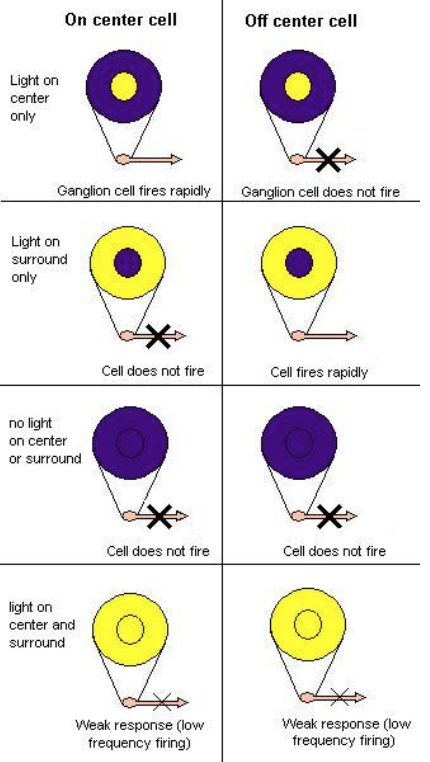
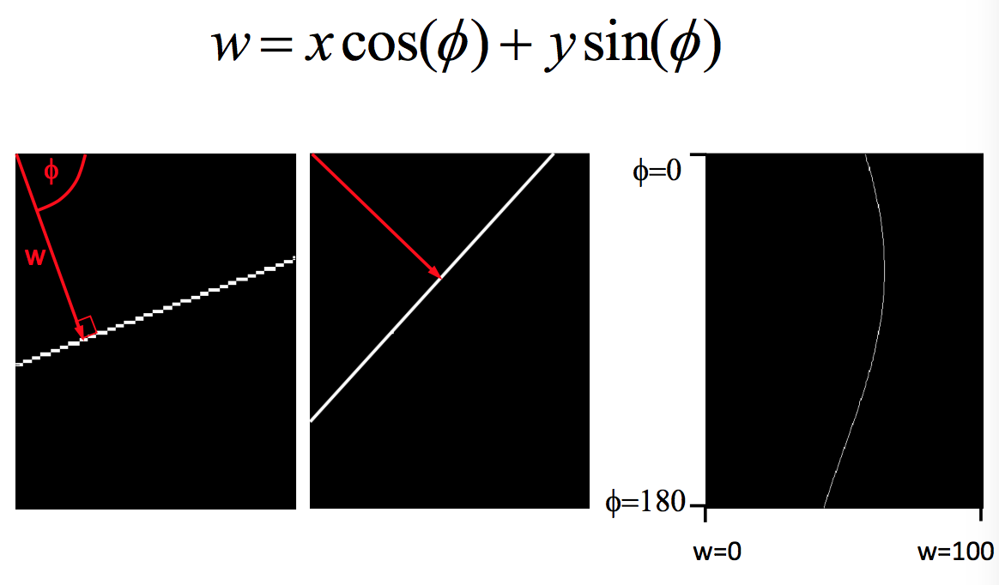
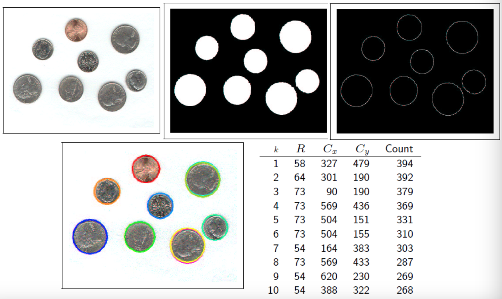

What is Computational Vision? Vision is the process of discovering from images what is present in the world,
and where it is.
The acquisition of knowledge about objects and events in the environment
through information processing
of
light emitted or reflected from objects
To make computers 'see'
"Automatic inference" of "properties" of "the world" from "images"
Automatic inference
Inference without (or minimal) human intervention
The world
The real unconstrained 3D physical world
Constrained/Engineered environments
Image
2D projection of the electromagnetic signal provided by the world
Properties
Geometric: shape, size, location, distance
Material : color, texture, reflectivity, transparency
Temporal: direction of motion (in 3D), speed, events
Illumination: light source specification, light source color
Symbolic: objects' class, object's ID
2 - Human Vision
Evolution of eyes:
Single cell - 1D capture of light
Multiple cell - Better direction resolution
A pinhole camera dilemma:
Wide aperture:
Bright images
Fuzzy images
Pinhole aperture:
Dim images
Sharp images
Solution: Use of light refraction and hence lenses
Refraction (Snell's Law) The wavelength changes, but wave crests can't be created or destroyed
at the interface, so to make the waves match up, the light has to change direction.
Pinhole Camera:
Basic geometry
Perspective projection
Image formation
f = the focal length (metres)
1/f = the power of the lens (dioptres)
Human eye has power of about 59 dioptres
1/f = 50 dioptres
f = 1/50 = 0.02m
As an object moves closer, the power of the lens must increase to accommodate
So if the object is infinitely far away 1⁄f = 1⁄∞
+ 1⁄0.02 = 50 dioptres
But if it is 1m away the lens must change shape to produce a sharp image 1⁄f
= 1⁄1 + 1⁄0.02 = 51 dioptres
The retina contains two types of photoreceptors that respond to light
Rods
≈120million
Extremely sensitive
Respond to single photon
Poor spatial resolution as they converge to same neuron within retina
Cones
≈6million
Active at higher light levels
Higher resolution as Signal processed by several neurons
2 types of Ganglion cells
On-center: stimulated when the center of its receptive field is exposed to light, inhibited when the surround
is exposed to light
Off-center: opposite reaction

Allows ganglion cells to also transmit information about difference in
firing rates of cells in the center and surround
Allows transmission of information about contrast
The size of the receptive field governs the spatial frequency of the information:
small receptive fields are stimulated by high spatial frequencies, fine detail
large receptive fields are stimulated by low spatial frequencies, coarse detail
Retinal ganglion cell receptive fields convey information about discontinuities
in the distribution of light falling on the retina; these often specify the edges of objects
Visual Pathway
Vision generated by photoreceptors in retina
Information leaves eye through optic nerve
There is a partial crossing of axons at the optic chiasm
After the chiasm, the axons are called the optic tract
Optic tract wraps around the midbrain to get to the lateral geniculate nucleus (LGN)
LGN axons travel to primary visual cortex at the back of the brain
3 - Edge Detection
Intensity Images
Data matrix where values represent intensities
Single matrix, with each element corresponding to one image pixel
Indexed Images
Consists of data matrix and a colormap matrix
Map is an m-by-3 array of doubles containing floating point values between 0 and 1
Each row of map specifies RGB components of a single color
Intensity gradients
Image is a function that maps coordinates to intensity - f(x,y)
Gradient of intensity is a vector with x and y components
Approximating the gradient
We use a 2x2 mask
Gx
-1
1
-1
1
Gy
1
1
-1
-1
For each mask of weights you multiply the corresponding pixel by the weight and sum over all pixels
Other edge detectors
Roberts
Gx
1
0
0
-1
Gy
0
-1
1
0
Sobel
Gx
-1
0
1
-2
0
2
-1
0
1
Gy
1
2
1
0
0
0
-1
-2
-1
Convolution
Computation of weighted sums of image pixels
For each pixel [i,j], the value of h[i,j] is calculated by translating the mask
to pixel [i,j] and taking the weighted sum of pixels in neighbourhood
Steps:
Take image
Convolve mask with image for each direction
Calculate Gx and Gy
Calculate magnitude (using Pythagoras' theorem)
Filtering
We can detect edges by calculating intensity change (gradient) across image
This is implemented using the idea of filtering
4 - Noise Filtering
Noise
We need to remove noise
There are many noise filters
Most can be implemented using convolution
e.g. Mean filter - this is a linear filter
The most widely used is Gaussian filtering
Sequenced filters
We can replace a 2D Gaussian filter with 2, 1D Gaussian filters in sequence
Efficiency and performance
Reading: Laplacian, Laplacian of Gaussian, Gaussian (Canny) Edge detection and Thresholding
5 - Colour
Objects selectively absorb some wavelengths and absorb others
Human retinas contain 3 different kinds of cones to give us the ability to distinguish different
forms of same objects
Colour mixing
Trichromatic (three colour) theory: eye's 3 different types of receptors sensitive
to different hues. Any colour can be produced by appropriate mixing of the 3 primary colours
Retina contains approximately equal numbers of red and green cones, but only 8% of blue
Theory explains:
How we discriminate wavelengths 2nm in difference
How we can match a mixture of wavelengths to a single colour
Some types of colour blindness
Does NOT account for colour blending
Some colour blend while others don't
Primary colours: Yellow, Blue, Red and Green
Trichromatic theory cannot explain why yellow is a primary colour
Opponent Process Coding
Neurons respond to pairs of primary colours
Some respond in centre-surround fashion
Response characteristics determines by appropriate ganglion cells connections
6 - Advanced Edge Detection
What causes intensity changes?
Geometric events
surface orientation (boundary) discontinuities
depth discontinuities
colour and texture discontinuities
Non-geometric events
illumination changes
specularities
shadows
inter-reflections
Edge Descriptors
Edge direction
perpendicular to the direction of maximum intensity change (i.e. edge normal)
Edge strength
related to the local image contrast along the normal
Edge position
the image position at which the edge is located
Main Steps of Edge Detection
Smoothing
suppress as much noise as possible, without destroying true edges
Enhancement
apply differentiation to enhance the quality of edges (i.e. sharpening)
Thresholding
determine which edge pixels should be discarded as noise and which should be kept
Localisation
determine the exact edge location
sub-pixel resolution might be required for some applications to estimate
the location of an edge to better than spacing between pixels
Edge Detection Using Derivatives
Often points that lie on an edge are detected by:
Detecting the local maxima or minima of 1st derivative
Detecting the zero-crossings of the 2nd derivative
Practical Issues
Noise suppression-localisation tradeoff
Smoothing depends on mask size
Larger mask sizes reduce noise, but worsen localisation (i.e. add uncertainty to the location
of the edge) and vice versa
Choice of threshold
Criteria for Optimal Edge Detection
Good detection
Minimise the probability of false positives (i.e. spurious
edges)
Minimise the probability of false negatives (i.e. missing
real edges)
Good localisation
Detected edges must be as close as possible to the true edges
Single response
Minimise the number of local maxima around the true edge
Canny edge detector
Canny has shown that the first derivative of the Gaussian closely approximates
the operator that optimises the product of signal-to-noise ratio and localisation
Hysteresis Thresholding
Standard thresholding
Can only select "strong" edges
Does not guarantee "continuity
Hysteresis thresholding uses two thresholds:
low threshold - tl
high threshold - th (usually th = 2tl)
Making the assumption that important edges should be along continuous curves in the image allows us to
follow a faint section of a given line and to discard a few noisy pixels that do not constitute a line
but have produced large gradients.
We begin by applying a high threshold. This marks out the edges we can be fairly sure are genuine.
Starting from these, using the directional information derived earlier,
edges can be traced through the image.
While tracing an edge, we apply the lower threshold, allowing us to trace faint
sections of edges as long as we find a starting point.
7 - Hough Transform
So far we have only found edge points, not edge segments
The Hough transform is a common approach to finding parameterised line segments
The basic idea:
Each straight line in this image can be described by an equation
Each white point, if considered in isolation, could lie on an infinite
number of straight lines
In the Hough transform each point votes for every line it could be on
The lines with the most votes win
Any line can be represented by two numbers
The yellow line will be represented by (w,Φ) In other wods we define it using:
a line from an agreed origin
of length w
at angle Φ to the horizontal
So we can represent any line in the image space as a point in the plane defined by (w,Φ)
This is called Hough Space

One point in image space corresponds to a sinusoidal curve in houghspace
Two points correspond to two curves in Hough space
The intersection of those two curves has "two votes"
This intersection represents the straight line in image space that passes through both points
There are generalised versions for ellipses, circles
For the straight line transform we need to supress non-local maxima
The input image could also benefit from edge thinning
Single line segments not isolated
Will still fail in the face of certain textures
Circle Hough Transform
Can be used to determine parameters of a circle when a number of points that fall on perimeter are known
A circle with radius R and center (a,b) can be described with the following parametric equations:
x = a + Rcos(θ)
y = b + Rsin(θ)
When θ sweeps through the full 360 degree range, the points (x,y) trace the perimeter of the circle
If an image contains many points, some of which are on the perimeters of circles, then the job
of the search program is to find parameter triplets (a,b,R) to describe each circle
The fact that the parameter space is 3D makes a direct implementation of the Hough technique
more expensive in computer memory and time
Examples:

8 - SIFT - Scale Invariant Feature Transform
Why do we care about matching features?
Object Recognition
Wide baseline matching
Given any two images, estimate the fundamental matrix and a set of matched interest points
Tracking
We want Invariance!!!
Good features should be robust to all sorts of nastiness that can occur between images
Types of invariance:
Illumination
Scale
Rotation
Affine
Full Perspective
How to achieve illumination invariance
Normalising (easy way)
Difference based metrics (sift)
How to achieve scale invariance
Pyramids
Divide width and height by 2
Take average of 4 pixels for each pixel(or Gaussian blur)
Repeat until image is tiny
Run filter over each size image and hope its robust
Scale Space (DOG method)
Pyramids but fill gaps with blurred images
Like having a nice linear scaling without the expense
Take features from difference of these images
If the feature is repeatably present in between Difference of Gaussians it is Scale Invariant
and we should keep it
How to achieve rotation invariance
Rotate all features to go the same way in a determined manner
Take histogram of Gradient directions
Rotate to most dominant
9 - Face Recognition
Eigenfaces
Think of a face as being a weighted combination of some "components" or "basis" faces
These basis faces are called eigenfaces
These basis faces can be differently weighted to represent any face
So we can use different vector of weights to represent different faces
Using Eigenfaces
Reconstruction:
We can store and then reconstruct a face from a set of weights
Recognition
We can recognise a new picture of a familiar face
Learning Eigenfaces
We take a set of real training faces
Then we find (learn) a set of basis faces which best represents the differences between them
We'll use a statistical criterion for measuring this notion of "best representation of the
differences between the training faces"
We can then store each face as a set of weights for those basis faces
We use a method called Principle Components Analysis (PCA)
To understand this we need to understand:
Eigenvectors
Covariance
Looking at PCA qualitatively
Subspaces
Imagine our face is simply a (high dimensional) vector of pixels
As an example data in two dimensions can be represented in one dimension by a straight line
Some lines will represent the data in this way well, some badly
This is because the projection onto some lines separates the data well, and the projection
onto some line separates the data badly
Rather than a line, we can perform roughly the same trick with a vector v
Noe we have to scale the vector to obtain any point on the line
Φi = μv
Eigenvectors
An eigenvector is a vector v that obeys the following rule:
Av = μv
Where A is a matrix and μ is a scalar (called the eigenvalue)
We can think of matrices as performing transformations on vectors
(e.g rotations, reflections)
We can think of the eigenvectors of a matrix as being special vectors (for that matrix)
that are scaled by that matrix
Different matrices have different eigenvectors
Only square matrices have eigenvectors
Not all square matrices have eigenvectors
An n by n matrix has at most n distinct eigenvectors
All the distinct eigenvectors of a matrix are orthogonal
Covariance
The single vector used to separate points in a 2D graph is a vector that expresses the direction
of correlation
i.e. Imagine there are 2 variables x1 and x2
They co-vary (y tends to change in roughly the same direction as x)
Expressing points using eigenvectors
Suppose the eigenvectors are specifying a new vector space
i.e. Can reference any point in terms of those eigenvectors
A point's position in this new coordinate system is its "weight vector"
For many data sets you can cope with fewer dimensions in the new space than in the old space
All we are doing in the face case is treating the face as a point in high dimensional space,
then treating the training set of face pictures as our set of points
To train:
Calculate the covariance matrix of the faces
Find the eigenvectors of that covariance matrix
These eigenvectors are the eigenfaces or basis faces
Eigenfaces with bigger eigenvalues will explain more of the variation in the set of faces, i.e.
will be more distinguishing
Image space to Face space
When we see an image of a face we can transform it to face space
wk = xi.
vk
There are k=1...n eigenfaces vk
The ith face in image space is a vector xi
The corresponding weight is wk
We calculate the corresponding weight for every eigenface
Recognition in face space
Recognition is now simple. We find the euclidean distance d between our face
and all the other stored faces in face space:
The closest face in face space is the chosen match
Reconstruction
The more eigenfaces you have the better the reconstruction, but you can have high quality
reconstruction even with a small number of eigenfaces
10 - Motion
Vision is inferential
Light
Prior knowledge
Boundary detection
Tracking
Optical flow
Video mosaics
Video compression
Geo registration
Video segmentation
Dynamic Vision
FOUR possibilities for dynamic nature of camera and world:
Stationary Camera and stationary Objects
Stationary Camera and moving Objects
Moving Camera and stationary Objects
Moving Camera and moving Objects
Detecting a change
Where has an image changed?
F(x,y,i) is the intensity of an image at point x,y at time i
Difference Picture, DP
If we have random noise in image the difference picture will include all the noise points in both images
So we need to filter out all pixels that are not part of a larger structure
Connectedness
To filter out noise, we can use the idea of 8 or 4 connectedness:
Two pixels are 4-neighbours if they share a common boundary
Two pixels are 8-neighbours if they share at least a common corner
Two pixels are 8 connected if we can create a path of 8-neighbours from one to the other
Removing noise
Pixels not in a connected cluster of a certain size are removed from the difference image
Determining motion
Want to determine motion of bodies in the image
Not enough information in local intensity changes in an image to determine motion
Aperture problem
Grating appears to be moving down and to the right
But it could be moving in many other directions such as only down, or only right
Locally we only see the horizontal component of motion
Motion correspondence
One way is to pick a bunch of interesting points in each image
And then match them (hoping they can be matched)
e.g. Pick corner points using a corner detector
Moravec Operator
Considered a corner detector
defines interest points as point where there is a large intensity variation in every
direction
This is the case at corners
Sensitive to detecting isolated pixels as corners
Measure the intensity variation by placing a small square window centered at P
Shift this window by one pixel in each of the eight principe directions
This operator is applied to every point (i,j) in the image
This produces a new interest image
We keep only the local maxima (i.e. points that are locally most interesting)
Motion correspondence ctd.
Now we have our points of interest
We can try to match points in one image with those in another
By doing this we are able to estimate the motion
Matching is guided by three principles:
Discreteness: a measure of the distinctiveness of individual points
Similarity: a measure of how closely two points resemble one another
Consistency: a measure of how well a match conforms with nearby matches
11 - ROC Analysis
Receiver operating characteristic
Provides tools to select possibly optimal models and to discard suboptimal ones
Type of errors
In ROC analysis two statistics are used:
Sensitivity = TP / (TP+FN)
i.e. The likelihood of spotting a positive case when there is one
the proportion of edges we find
Specificity = TN / (TN+FP)
i.e. The likelihood of spotting a negative case when there is one
the proportion of non-edges we find
The ROC space
Only the True Positive Rate (TPR) and False Positive Rate (FPR)
are needed
TPR determines a classifier test performance on classifying positive
instances correctly among all positive samples available during the test (sensitivity)
FPR defines how many incorrect positive results occur among all negative samples
available during the test (1-specificity)
A ROC space is defined by FPR and TRP as x and
y axes respectively
All the optimal detectors lie on the convex hull
Which one is the best depends on the ratio of edges to non-edges, and the different cost of
misclassification
Any detector on this side can lead to a better detector by flipping its output
Should always quote sensitivity and specificity for your algorithm, if possible plotting an
ROC graph. Any statistic you quote should be an average over a suitable range of tests for your algorithm
12 - Object Recognition
Can be defined as labelling problem
Based on models of known objects
What is object recognition?
Given:
an image containing one or more objects
a background
A set of labels corresponding to a set of known models to the system
Assign correct labels to regions in image
Closely linked to image segmentation
Segmentation needed for object recognition
Object recognition needed for segmentation
System Components needed for Object Recognition
Model database
Feature detector
Hypothesizer
Hypothesis verifier
Model Database
Contains all models known to system
Information in model depends on approach used for recognition
Qualitative or functional description
Precise geometric surface information
Typically abstract feature vectors
Feature: some attribute of object thought to be important for recognition, eg shape, colour, size
Feature Detector
Applies operators to image and identifies location of features
Depends on type of objects and organisation of model database
Hypothesizer
Using detected features in image, assigns likelihoods to objects present
Used to reduce search space by using certain features
Modelbase organised such thtat helps eliminate unlikely objects as candidates
Hypothesis verifier
Uses object models to verify hypothesis
Refines the likelihood of objects
System then selects the object with highest likelihood, based on evidence
Issues
Object vs Model representation
How should models be represented in model databases?
What are the important features to be captured?
Some models, geometry alone is sufficient, whereas in some functional may be needed
So: representation should capture all relevant information and should be well organised.
Feature Extraction
What features should be detected?
How can they be detected well?
2D vs 3D features
Feature-Model matching
How can features in images be matched to models?
Usually many features, exhaustive search is computationally too slow
Effectiveness and efficiency must be considered
Hypothesis formation
How are a set of likely objects based on feature matching selected?
How can probabilities be assigned?
Normally just used to reduce search space
Likelihood of presence of an object based on detected features
Object verification
How to select most likely object based on a set of probable objects?
Not always easy - but if geometric can be much easier
Complexity
Images of a scene depend on
Illumination
Camera parameters
Camera location
Need to consider several factors for object recognition
Scene constancy
Image acquired in similar conditions as models
Image-model spaces
3D objects considered as 2D
If perspective effects can not be ignored, it is more complex
Number of objects in model database
If small, no hypothesis formation stage needed
Otherwise may be crucial to reduce parameter space
Number of objects in image AND occlusion
If only one object, it may be easily visible
As number of object increases, the probability of occlusion increases
Causes absence of features and generation of unexpected features
2D images
If objects always in a stable position in a scene they can be considered 2D
Therefore use a 2D database
Two possible cases:
Objects will not be occluded as an industrial setting
Object ay be occluded by other objects or only partially visible
3D images
If images obtained from arbitrary view point then object may appear different in each view
Perspective effect and view point must be considered
Remember that images only contain 2D information and will therefore affect object recognition
Are two object separated from each other or not?
13 - Model Based Object Recognition
Model Based Approach
David Marr defined approach to study of vision in 70s
Saw this computational approach as having 3 levels:
Computational theory: What is it that the model is trying ti accomplish?
What are the processed for?
Algorithmic level: What algorithm is needed? What sort of processes might be
needed?
Mechanism level: What mechanism is needed to implement the algorithm?
With the brain this would be associated with it neurology
Problems with such theories
We cannot really be sure that they are truly representative of actual brain function
Cannot infer an algorithm from the properties of cells, and nor can we definitely infer
a mechanism if we know the algorithm
His contribution:
Was a critical ste in formulation of computational theory concerning discovery of the
properties of the visible world
Provided many examples of un-determined problems. i.e.
The world is made up of solid, non-deformable objects
Only one can occupy a given point in space and time
Therefore can use laws of Physics to determine
Marr's Approach
Based on 3 main representations:
The primal sketch
Description of the intensity changes in the image and their local geometry -> intensity variations
are likely to correspond to physical reality
The 2.5D sketch
Viewer centred description of orientation, contour and depth
The 3D model
Object centred representation of 3D objects -> allowing handling and recognition
Models Based Approach ctd.
There is an infinite variety of object. How do we represent, store and access models of them
efficiently?
One suggestion was the use of a small library of 3D parts from which many complex models can
be constructed
There are many schemes: generalised cylinders, Geons, ...
But they didn't work very well...
Appearance based recognition: SIFT (Scale-Invariant Feature Transform)
These statistical approaches characterise some aspects of the appearance of an object that can be used
to recognise it
But this means they are (largely) view dependent, you have to learn a different statistical model
for each different view
e.g. SIFT based recognition
Find interest points in the scale space
the image is convolved with Gaussian filters at different scales,
and then the difference of successive Gaussian-blurred images are taken
Re-describe the interest points so that they are robust to:
Image translation, scaling, rotation
Partially invariant to illumination changes, affine and 3d projection changes
Part-Based Model
Refers to a broad class of detection algorithms used no images, in which various parts
of the image are used separately in order to determine if and where an object of interest exists
Use smaller part detectors, for instance mouth, nose, and eye detectors and make a judgement
about whether an image has a face based on the relative positions in which the components exist
Constellation Model
A probabilistic, generative model for category-level object recognition. Like other
part-based models, it attempts to represent an object class by a set of N parts under
mutual geometric constraints
Because it considers the geometric relationship between different parts,
the Constellation Model differs significantly from appearance-only,
or "bag-of-parts" representation models, which explicitly disregard the location of image features.
The task becomes significantly complicated by factors such as background clutter, occlusion,
and variations in viewpoint, illumination, and scale.
Ideally, we would like the particular representation we choose to be robust to as
many of these factors as possible.
Even if two objects belong to the same visual category,
their appearances may be significantly different.
For structured objects such as cars, bicycles, and people,
separate instances of objects from the same category are subject to similar geometric constraints
Summary
This is not a resolved debate
There is evidence for both sides
Structural 3d information is almost certainly extracted by the brain too
Model based: how do we extract good enough low level features (e.g. a depth map)?
Appearance based: only seems to be good for recognition, which is a small part of the vision problem.